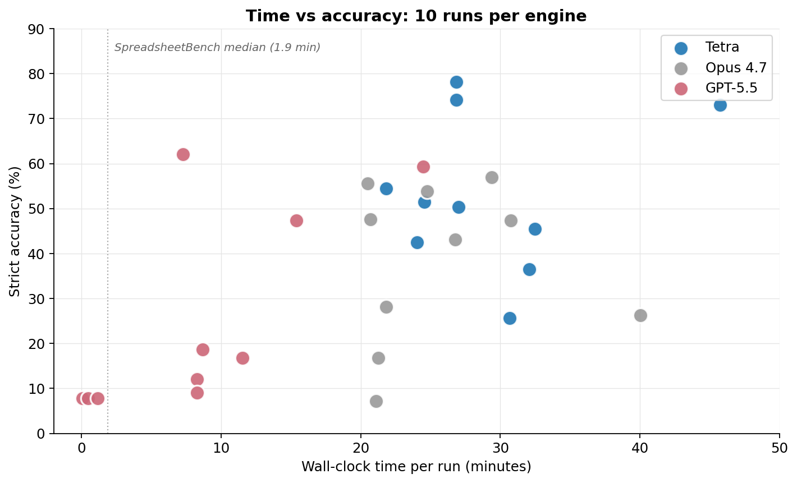
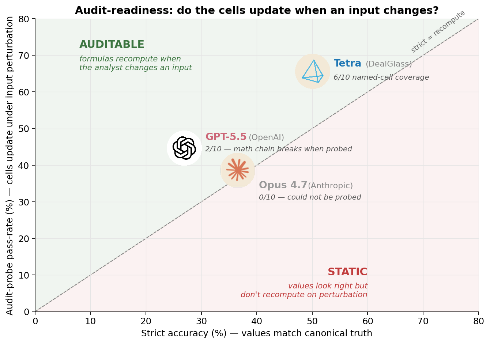
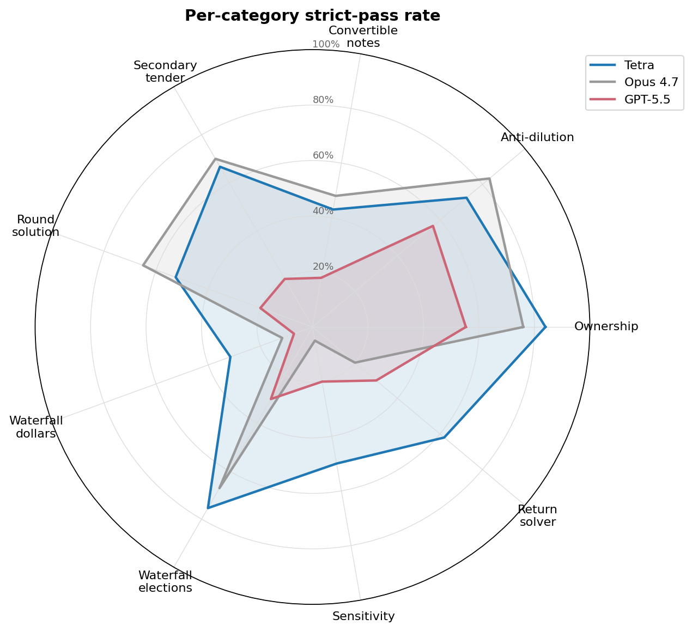
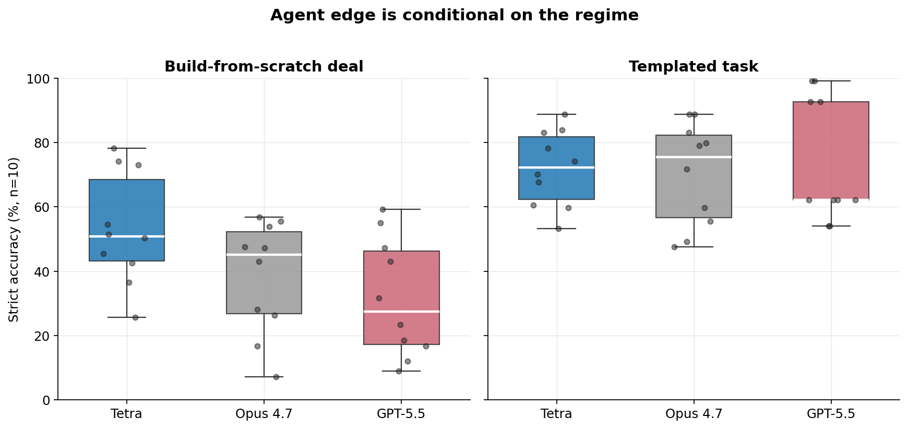

Benchmarking Agents for Cap Table Modeling
We asked 9 venture investors what spreadsheet task wastes the most time. 8 said cap tables, pref-stack waterfalls, or some model derived from one of those.
| Role | YoE | Pain point |
|---|---|---|
| Principal | 10 | "All modeling derived from cap tables" |
| Associate | 7 | Pref stack liquidation / waterfall analysis |
| Associate | 5 | Pref stack modeling, customer revenue rollups |
| Associate | 4 | Exit analysis, pref stack at liquidation |
| Associate | 3 | Cap tables and waterfalls, especially with SAFEs |
| Associate | 3 | Connecting accounts in waterfall formulas |
| Analyst | 2 | Cap tables, ownership modeling (ESOP, valuation, venture debt, SAFEs) |
| Analyst | 2 | "Pref stack / waterfall" |
| Analyst | 1 | Trust + hallucination concerns |
Respondents anonymized to protect candor; roles and tenure accurate.
The pattern was consistent. Cap tables are the central artifact of every priced round, every diligence cycle, every fund-return calculation. They're also where deal teams burn hours.
The public benchmark for spreadsheet agents, SpreadsheetBench Verified, scores agents on 400 atomic operations averaging about 2 minutes each. We needed something closer to actual diligence work: one dense end-to-end deal model, built from scratch, with formulas wired all the way through. So we built it.
We constructed a synthetic Series F deal, defined 167 ground-truth output cells, and ran three agents against it, ten times each. We measured strict cell accuracy, wall-clock time, and one property other benchmarks don't test: audit-readiness. Whether the output is a live model that recomputes when you change an input, or a static report dressed up as a model.
Acephalt is integrating Tetra from DealGlass into our AI due-diligence product. This post is what we found before making that decision.
One model, no second pass
Take a single output cell from the deal scenario. At the $700M exit, what fraction of the company does our $10M check need to own to clear a 3× return?
The answer is 2.10%.
Tetra writes the cell as =$C$7/C14. Target proceeds divided by F-class waterfall residual. Two-formula trace. Pass.
GPT-5.5 builds a 130-row × 2,121-column iteration ladder. 259,920 formulas. It collapses with INDEX($AG$3:$AG$130, MATCH(1, $HE$3:$HE$130, 0)) to pick a row matching a target condition. The arithmetic inside the table is internally consistent. The row it lands on returns 9.96%. Five times the truth.
A $10M check sized at five times the right target moves a fund's allocation decision in the wrong direction. That is the cost of getting one cell wrong.
Verifying makes it worse. With Tetra's two-formula chain, you trace the dependency in two seconds. With GPT-5.5's 259,920-formula model, you can't. There is no "verify cell-by-cell" path through 260,000 cells. The analyst has two choices: trust the output, or rebuild the model.
The question this benchmark actually answers: which AI produces output an analyst can take to a principal without rebuilding it.
What we measured
What the agent gets, and what we score:
- Stakeholders
- Securities
- Notes
- RoundTerms
- Assumptions
- Pro-Forma
- Waterfall 5 exits
- Sensitivity 3×3 grid
- Return-Solver
The deal:
- Series F, $1.4B pre-money (a slight down round). $30M primary plus $15M secondary tender at 0.85× the round PPS.
- Two convertible notes outstanding, mismatched terms. One converts at the cap, the other at the discount-to-PPS. The model has to figure out which.
- Pre-money ESOP refresh to 13% of post-money fully diluted. Coupled into the round PPS as a fixed-point.
- Anti-dilution on Series D and Series E. Both trigger because the new PPS comes in below their original conversion prices.
- Five exit values from $700M to $8B. Conversion election (preference vs convert) as Nash equilibrium across seven priced classes.
We tracked 167 specific output values across pro-forma ownership, anti-dilution ratios, convertible note conversion, waterfall dollars at each exit, sensitivity-grid outputs, and return-solver percentages. Every value was independently re-derived two ways: a Python decimal-arithmetic builder, and a separate openpyxl formula-driven workbook. The two builders had to agree before we accepted truth as canonical.
Then we fired three AI systems at it, ten runs each: Tetra, Opus 4.7, and GPT-5.5. Opus and GPT-5.5 ran on their highest reasoning settings.
We also tested a fourth tool, Shortcut. Excluded from this analysis because its backend failed about 60% of fires (V8 heap crashes, 30-minute poll timeouts, intermittent 502s). We landed n=10 valid runs only after firing 33 attempts. Production diligence work doesn't tolerate that.
Methodology, scoring harness, and reproducibility instructions are open-source: github.com/arthursolwayne/cap-table-bench.
Overall performance
| Engine | Mean strict accuracy | Range across 10 runs |
|---|---|---|
| Tetra | 50.06% | 25.7 – 73.1% |
| Opus 4.7 | 36.58% | 7.2 – 56.9% |
| GPT-5.5 | 26.90% | 7.8 – 59.3% |
Strict accuracy: percentage of the 167 cells that match canonical truth within ≤0.1pp for percentages, ≤0.1% relative for dollars. The threshold is set so passing means an analyst would sign off without independent verification.
No engine breaks 75% on its best run. The deal is hard by design. It's hard the way real Series F modeling is hard: coupled fixed-points, multi-class anti-dilution, hybrid convertibles, secondary tender. The strict tolerance is also tight. 0.1pp on a 19% ownership value is a $5M difference on a $2.5B post-money.
The Tetra-Opus 4.7 gap is 13.5pp. At n=10 each that's directionally robust, statistically borderline (we'd want n=20 each to firm it up). The Tetra-GPT-5.5 gap is 23pp, statistically significant under standard tests (Cohen's d = 1.45, p = 0.019 after multiple-comparisons correction).
What matters more than the absolute numbers is the ratio of accuracy to architecture.
Time vs accuracy

| Engine | Mean wall time | Median | Range |
|---|---|---|---|
| Tetra | 22 min | 21 min | 17–46 min |
| Opus 4.7 | 25 min | 24 min | 14–40 min |
| GPT-5.5 | 20 min | 17 min | 5 sec – 24 min |
All three engines work on the same problem with the same input. Compute time is comparable. Accuracy is not.
For context: SpreadsheetBench Verified, the public benchmark for spreadsheet agents, averages about 2 minutes per task. Our deal averages 20-25 minutes. Roughly 10-12× the compute, because the deal has 10-12× the structure to construct: 167 coupled cells, multi-class anti-dilution, hybrid convertibles solved as a fixed-point, waterfall election as Nash equilibrium across seven classes.
GPT-5.5's range is the giveaway. The fast tail (5 seconds) means GPT-5.5 sometimes returns a near-empty workbook without doing the work. The slow tail (24 minutes) means GPT-5.5 builds 373,000-formula models. Same compute budget, very different output. We can't cleanly attribute the early-bail behavior to the model versus our integration, so we don't claim it as a reliability number. But it shows up in the strict mean: the bailed runs score near zero, which pulls the average down.
Tetra is the only engine that returns work consistently in the 17–46 minute window. The variance shows up in the accuracy, with every run finishing.
Audit-readiness
Accuracy doesn't capture what we care about. The harder question: when the analyst opens the output and changes an assumption, does the model recompute?
We perturbed each engine's output workbook by changing the Series F primary raise from $30M to $33M. We let the workbook recalculate through whatever machinery it supports. We checked which output cells updated to the correct new values.
| Engine | Live recompute | Inputs we could perturb |
|---|---|---|
| Tetra | 65.6% | 6 / 10 runs |
| GPT-5.5 | 44.7% | 2 / 10 runs |
| Opus 4.7 | 38.6% | 0 / 10 runs |

Opus 4.7's 0 of 10 means: in zero of Opus 4.7's outputs did the input value live as a named or labeled cell we could write to. Opus 4.7 wrote workbooks where the raise existed somewhere in the workbook but wasn't reachable as an addressable input. The 38.6% number is the fraction of cells that happened to be passthrough. Values identical between canonical and perturbed truth that didn't need to recompute.
GPT-5.5 was more interesting. The 373,000 formulas in its outputs aren't actually wired to the boundary inputs. They're wired to internal scratch cells. On the rare runs where we could perturb the raise input, recompute hit ~25%. The elaborate model isn't a live financial model.
Tetra was the only engine where 6 of 10 runs exposed enough of the input boundary to even attempt perturbation. On those runs, recompute was double GPT-5.5's. Every cell traces back to an assumption an analyst can read and modify.
That's audit-readiness. Output behaves like a real Excel model because, structurally, it is one.
Category-level performance

The 167 cells split across nine categories. Tetra's lead concentrates on the categories where structural model construction matters: waterfall dollars, waterfall elections, sensitivity grid, return-solver. On simpler primitives like individual ownership percentages, single anti-dilution ratios, and single convertible note conversion, Opus 4.7 is competitive.
Tetra's edge shows up in constructing the model.
That observation is consistent with a separate result we ran on a templated benchmark, where the engine receives an empty workbook with named cells already laid out and fills in values. There, all three engines tied at ~70%. The agent edge largely vanishes when the structure is provided up front. The agent's job is partly to invent the right structure. When the structure is given, the foundation model's reasoning closes the gap.
Where Tetra doesn't win

We tested four scenarios. This deal is the one Tetra wins decisively. The other three:
- Templated tasks (engine fills an empty workbook with named cells): three-way tie at ~70%. Tetra 71.9%, Opus 4.7 70.3%, GPT-5.5 74.0%.
- Small simple cap tables (3 rounds, single priced round): Opus 4.7 wins, sometimes by 30 percentage points. The agent has fixed overhead that doesn't pay off when the model fits in a single Python pass.
- Sparse one-sentence prompts: also inverts. The agent needs structure to scaffold against. Underspecified prompts hurt it more than they hurt raw foundation-model reasoning.
The agent edge is conditional on the regime. Dense, complex, build-from-scratch cap tables are the regime VCs actually live in. This benchmark was designed for that. The other regimes don't need the agent.
Cross-validation against SpreadsheetBench
DealGlass's published SpreadsheetBench Verified result is 94.25%. 14 percentage points ahead of Anthropic's Opus 4.6 (80.25%) and OpenAI's GPT-5.4 (78.25%). Full leaderboard breakdown on the Tetra page.
Our result reproduces something close to that 14pp gap on a much harder, much more domain-specific scenario. Tetra leads Opus 4.7 by 13.5pp on this benchmark.
Same gap, two independent benchmarks, structurally different task families. The reproducibility is the signal. The absolute numbers differ. 94% on SpreadsheetBench, 50% on our benchmark. The tasks are different. SpreadsheetBench is 400 atomic operations averaging about 2 minutes each. Our benchmark is one dense end-to-end deal model that takes 20-25 minutes.
We built this benchmark to address what SpreadsheetBench doesn't:
- SpreadsheetBench tests output values, not live-formula propagation. Audit-probe is our addition.
- SpreadsheetBench's leaderboard headline numbers anchor on Opus 4.6 and GPT-5.4, both an iteration behind production. We tested Opus 4.7 and GPT-5.5.
- SpreadsheetBench tasks are atomic. Our task is end-to-end deal modeling. The structure is what the agent has to invent.
The takeaway from running both: engine ordering holds. What changes on a harder, more domain-specific test is how much harder it becomes to win at all. No engine cracks 75% on our benchmark, even on its best run. That's where AI cap table modeling stands in April 2026.
Acephalt + DealGlass
Acephalt is integrating Tetra from DealGlass as the spreadsheet engine inside our AI due-diligence product.
What that means for our customers:
- Upload a data room. Acephalt parses the documents, builds the underlying models on Tetra, produces audit-ready output the analyst can take ownership of.
- Run multiple deals in parallel. Tetra's reliability profile lets us actually deliver on this. We tried it with the alternatives and we couldn't.
- Every cell traces back. Change an assumption, the model recomputes. The output behaves like a real Excel model because, structurally, it is one.
We tested four AI tools against the cap table modeling problem. Three produce outputs that look like models but don't behave like them. Tetra is the one where the behavior matches the appearance.
For the analyst staring down a real Series F on a real Tuesday, with the principal expecting the model by EOD: that's the difference between shipping it and rebuilding it.
Methodology and reproducibility
The benchmark is open-source at github.com/arthursolwayne/cap-table-bench. Truth was independently rebuilt twice (Python decimal arithmetic and openpyxl) and reconciled to ≤1e-6 before any run; five skeptical audits caught and fixed eleven measurement bugs before publication; every run's output workbook, score breakdown, and audit-probe result is preserved in the repo. We'd rather someone find a twelfth bug than ship a result we'd retract.
If you're a fund or family office evaluating AI tools for diligence work, we're happy to walk through the methodology in detail.